30 Supervised Learning Methods
Machine learning includes a vast collection of algorithms, well over a hundred commonly used methods, each with its own strengths, assumptions, and tuning parameters. In this chapter, we introduce a small but representative set of algorithms that illustrate the major ideas behind supervised learning. Rather than aiming for exhaustive coverage, our goal is to build intuition for how different approaches learn from data and why they make different kinds of predictions.
To keep the examples concrete and accessible, we use the two-predictor digit dataset introduced in Section 28.3.1 as our running example. This dataset is small enough to visualize, yet rich enough to reveal the behavior of real algorithms. All code examples rely on functions from the dslabs package. Later, in Chapter 31, we will show how to implement these ideas efficiently using the caret package, which provides a unified interface for fitting and tuning many different machine learning methods.
30.1 Linear and logistic regression
We introduced linear regression and logistic regression in the Linear Models part of the book as tools for quantifying associations between variables. However, these models can also be viewed as prediction algorithms. Once we estimate their parameters from training data, we can make predictions for any new predictor value \(\mathbf{x}\) simply by evaluating the fitted model at that point. This predictive perspective places linear and logistic regression squarely within the family of supervised learning methods.
Linear regression
Linear regression can be considered a supervised learning method for continuous outcomes. Given a numeric outcome \(Y\) and predictors \(\mathbf{X} = (X_1,\dots,X_p)^\top\), we model the conditional expectation as
\[ \mathrm{E}[Y \mid \mathbf{X} = \mathbf{x}] = \beta_0 + \sum_{j=1}^p \beta_j x_j, \] a linear function of the predictors. Linear regression provides a simple, interpretable baseline, and many supervised learning algorithms can be viewed as extensions or modifications of this idea.
However, linear regression is not appropriate when the outcome is categorical. In Section 28.3.1, we introduced logistic regression as a method designed specifically for modeling class probabilities in binary classification problems.
Logistic regression
For two classes presented in Section 28.3.1, we can model the probability of class 1 using the logistic function:
\[ \log\frac{p(\mathbf{x})}{1 - p(\mathbf{x})} = \beta_0 + \beta_1 x_1 + \beta_2 x_2, \,\, p(\mathbf{x}) = \Pr(Y = 1 \mid X_1 = x_1, X_2 = x_2), \]
which estimates the probability that an observation belongs to class 1. This is the binary logistic regression model.
For more than two classes (\(K > 2\)), logistic regression can be extended in two common ways: one-versus-rest (OvR) and multinomial logistic regression.
In the one-versus-rest approach, we fit \(K\) separate binary logistic regression models. For each class \(k\), we model:
\[ \log\frac{q_k(\mathbf{x})}{1 - q_k(\mathbf{x})} = \beta_{k,0} + \sum_{j=1}^p \beta_{k,j} x_j, \qquad k = 1,\dots,K. \]
Here, \(q_k(\mathbf{x})\) estimates the probability that an observation belongs to class \(k\) versus the rest, but these quantities are not guaranteed to sum to 1, nor to be mutually consistent.
After fitting all \(K\) models, the predicted class for a new observation \(\mathbf{x}\) is
\[ \hat{y}(\mathbf{x}) = \arg\max_k q_k(\mathbf{x}). \]
OvR is simple but does not produce a coherent probability distribution.
The multinomial approach resolves this inconsistency by modeling all class probabilities jointly. We select one class, say class \(K\), as a reference and fit:
\[ \log\frac{p_k(\mathbf{x})}{p_K(\mathbf{x})} = \beta_{k,0} + \sum_{j=1}^p \beta_{k,j} x_j, \qquad k = 1,\dots,K-1. \]
Let
\[ \eta_k(\mathbf{x}) = \beta_{k,0} + \sum_{j=1}^p \beta_{k,j} x_j, \qquad \eta_K(\mathbf{x}) = 0. \]
The class probabilities are computed using the softmax function:
\[ p_k(\mathbf{x}) = \frac{\exp(\eta_k(\mathbf{x}))} {\sum_{j=1}^K \exp(\eta_j(\mathbf{x}))}, \qquad k=1,\dots,K. \]
These probabilities automatically satisfy
\[ \sum_{k=1}^K p_k(\mathbf{x}) = 1. \]
The predicted class is
\[ \hat{y}(\mathbf{x}) = \arg\max_k p_k(\mathbf{x}). \]
Multinomial logistic regression is generally preferred because it produces coherent probabilities that sum to 1 and jointly models the relationships among classes. The one-versus-rest approach is computationally simpler, especially when \(K\) is large, and often yields similar class predictions, even if the corresponding probability estimates differ.
In Chapter 28, we saw that logistic regression was not flexible enough to approximate \(p(\mathbf{x})\) well for the two-digit example: its accuracy was only 0.775. In the next sections, we introduce algorithms that improve on this by providing the needed flexibility, each using a different approach to estimating the conditional class probabilities.
30.2 k-nearest neighbors
We introduced the kNN algorithm in Section 29.1. In Section 29.8, we noted that \(k=65\) provided the highest estimated accuracy. Using \(k=65\), we obtain an accuracy 0.825, an improvement over regression. A plot of the estimated conditional probability shows that the kNN estimate is flexible enough and does indeed capture the shape of the true conditional probability.
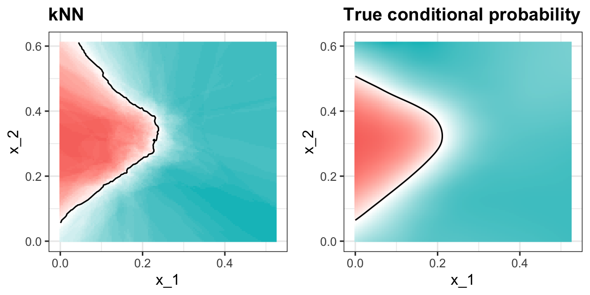
You are ready to do exercises 1 - 13.
30.3 Probabilistic classification models
We have described how, when using squared loss, the conditional expectation provides the best approach to developing a decision rule. In a binary case, the smallest true error we can achieve is determined by Bayes’ rule, which is a decision rule based on the true conditional probability:
\[ p(\mathbf{x}) = \mathrm{Pr}(Y = 1 \mid \mathbf{X}=\mathbf{x}) \]
We have described several approaches to estimating \(p(\mathbf{x})\). In all these approaches, we estimate the conditional probability directly and do not consider the distribution of the predictors. In machine learning, these are referred to as discriminative approaches.
However, Bayes’ theorem tells us that knowing the distribution of the predictors \(\mathbf{X}\) may be useful. Methods that model the joint distribution of \(Y\) and \(\mathbf{X}\) are often referred to as generative models (we model how the entire data, \(\mathbf{X}\) and \(Y\), are generated). We start by describing the most general generative model, Naive Bayes, and then proceed to describe two specific cases, quadratic discriminant analysis (QDA) and linear discriminant analysis (LDA).
Naive Bayes
Recall that Bayes rule tells us that we can rewrite \(p(\mathbf{x})\) as follows:
\[ p(\mathbf{x}) = \mathrm{Pr}(Y = 1|\mathbf{X}=\mathbf{x}) = \frac{f_{\mathbf{X}|Y = 1}(\mathbf{x}) \mathrm{Pr}(Y = 1)} { f_{\mathbf{X}|Y = 0}(\mathbf{x})\mathrm{Pr}(Y = 0) + f_{\mathbf{X}|Y = 1}(\mathbf{x})\mathrm{Pr}(Y = 1) } \]
with \(f_{\mathbf{X}|Y = 1}\) and \(f_{\mathbf{X}|Y = 0}\) representing the distribution functions of the predictor \(\mathbf{X}\) for the two classes \(Y = 1\) and \(Y = 0\). The formula implies that if we can estimate these conditional distributions, we can develop a powerful decision rule. However, this is a big if.
As we go forward, we will encounter examples in which \(\mathbf{X}\) has many dimensions and we do not have much information about the distribution. In these cases, Naive Bayes will be practically impossible to implement. However, there are instances in which we have a small number of predictors (not much more than 2) and many categories in which generative models can be quite powerful. We describe two specific examples and use our previously described case studies to illustrate them.
Let’s start with a very simple and uninteresting, yet illustrative, case: the example related to predicting sex from height.
set.seed(1995)
y <- heights$height
train_index <- createDataPartition(y, times = 1, p = 0.5, list = FALSE)
train_set <- heights[train_index,]
test_set <- heights[-train_index,]In this case, the Naive Bayes approach is particularly appropriate because we know that the normal distribution is a good approximation for the conditional distributions of height given sex for both classes \(Y = 1\) (female) and \(Y = 0\) (male). This implies that we can approximate the conditional distributions \(f_{X|Y = 1}\) and \(f_{X|Y = 0}\) by simply estimating averages and standard deviations from the data:
The prevalence, which we will denote with \(\pi = \mathrm{Pr}(Y = 1)\), can be estimated from the data with:
pi <- mean(train_set$sex == "Female")Now we can use our estimates of average and standard deviation to get an actual rule:
Our Naive Bayes estimate \(\hat{p}(x)\) looks a lot like a logistic regression estimate:
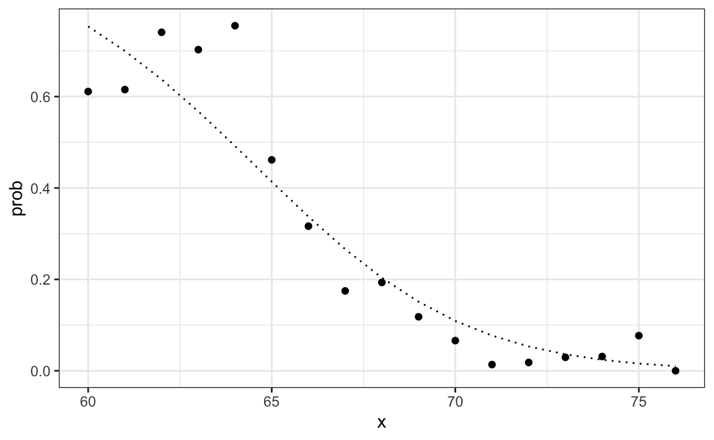
In fact, we can show that the Naive Bayes approach is similar to the logistic regression prediction mathematically. However, we leave the demonstration to a more advanced text, such as the Elements of Statistical Learning1. We can see that they are similar empirically by comparing the two resulting curves.
Controlling prevalence
One useful feature of the Naive Bayes approach is that it includes a parameter to account for differences in prevalence. Using our sample, we estimated \(f_{X|Y = 1}\), \(f_{X|Y = 0}\) and \(\pi\). If we use hats to denote the estimates, we can write \(\hat{p}(x)\) as:
\[ \hat{p}(x)= \frac{\hat{f}_{X|Y = 1}(x) \hat{\pi}} { \hat{f}_{X|Y = 0}(x)(1-\hat{\pi}) + \hat{f}_{X|Y = 1}(x)\hat{\pi} } \]
As we discussed earlier, our sample has a much lower prevalence, 0.24, than the general population. So if we use the rule \(\hat{p}(x) > 0.5\) to predict females, our accuracy will be affected due to the low sensitivity:
y_hat_bayes <- ifelse(p_hat_bayes > 0.5, "Female", "Male")
sensitivity(data = factor(y_hat_bayes), reference = factor(test_set$sex))
#> [1] 0.324Again, this is because the algorithm gives more weight to specificity to account for the low prevalence:
specificity(data = factor(y_hat_bayes), reference = factor(test_set$sex))
#> [1] 0.947This is mainly due to the fact that \(\hat{\pi}\) is substantially less than 0.5, so we tend to predict Male more often. It makes sense for a machine learning algorithm to do this in our sample because we do have a higher percentage of males. But if we were to extrapolate this to a general population, our overall accuracy would be affected by the low sensitivity.
The Naive Bayes approach gives us a direct way to correct this since we can simply force \(\hat{\pi}\) to be whatever value we want it to be. So to balance specificity and sensitivity, instead of changing the cutoff in the decision rule, we could simply change \(\hat{\pi}\) to 0.5 like this:
p_hat_bayes_unbiased <- f1 * 0.5 / (f1 * 0.5 + f0 * (1 - 0.5))
y_hat_bayes_unbiased <- ifelse(p_hat_bayes_unbiased > 0.5, "Female", "Male")Note the difference in sensitivity with a better balance:
sensitivity(factor(y_hat_bayes_unbiased), factor(test_set$sex))
#> [1] 0.775
specificity(factor(y_hat_bayes_unbiased), factor(test_set$sex))
#> [1] 0.717The new rule also gives us a very intuitive cutoff between 66-67, which is about the middle of the female and male average heights:
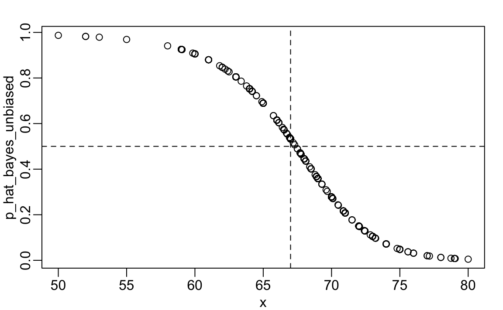
Quadratic discriminant analysis
Quadratic Discriminant Analysis (QDA) is a version of Naive Bayes in which we assume that the distributions \(f_{\mathbf{X}|Y = 1}(x)\) and \(f_{\mathbf{X}|Y = 0}(\mathbf{x})\) are multivariate normal. The simple example we described in the previous section is actually QDA. Let’s now look at a slightly more complicated case: the 2 or 7 example.
In this example, we have two predictors so we assume each one is bivariate normal. This implies that we need to estimate two averages, two standard deviations, and a correlation for each case \(Y = 1\) and \(Y = 0\). Once we have these, we can approximate the distributions \(f_{X_1,X_2|Y = 1}\) and \(f_{X_1, X_2|Y = 0}\). We can easily estimate parameters from the data and with these estimates in place, all we need are the prevalence \(\hat{\pi}\) to compute:
\[ \hat{p}(\mathbf{x})= \frac{\hat{f}_{\mathbf{X}|Y = 1}(\mathbf{x}) \hat{\pi}} { \hat{f}_{\mathbf{X}|Y = 0}(x)(1-\hat{\pi}) + \hat{f}_{\mathbf{X}|Y = 1}(\mathbf{x})\hat{\pi} } \]
Note that the densities \(f\) are bivariate normal distributions. Here we provide a visual way of showing the approach. We plot the data and use contour plots to give an idea of what the two estimated normal densities look like (we show the curve representing a region that includes 95% of the points):
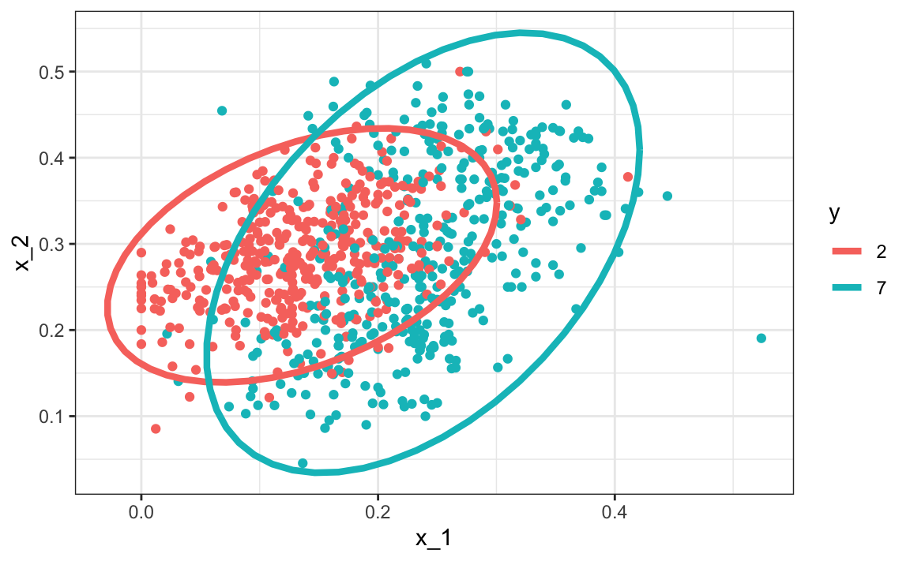
We can fit QDA using the qda function the MASS package:
We see that we obtain relatively good accuracy:
confusionMatrix(y_hat, mnist_27$test$y)$overall["Accuracy"]
#> Accuracy
#> 0.815The conditional probability looks relatively good, although it does not fit as well as the kernel smoothers:
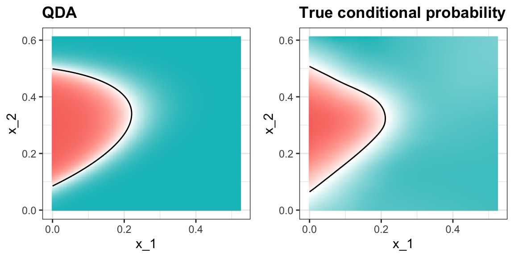
One reason QDA does not work as well as the kernel methods is because the assumption of normality does not quite hold. Although for the 2s it seems reasonable, for the 7s it does seem to be off. Notice the slight curvature in the points for the 7s:
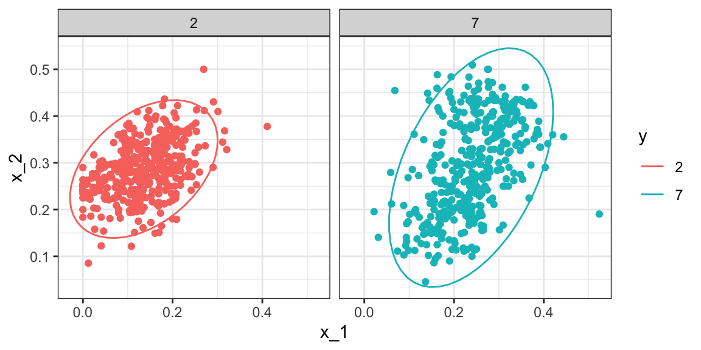
QDA can work ok here, but it becomes harder to use as the number of predictors increases. Here we have 2 predictors and had to compute 4 means, 4 SDs, and 2 correlations. Notice that if we have 10 predictors, we need to estimate 45 correlations for each class. In general, the formula for the number of correlations we have to estimate is \(p(p-1)/2\) for each class, which gets big fast. Once the number of parameters approaches the size of our data, the method becomes impractical due to overfitting.
Linear discriminant analysis
A relatively simple solution to QDA’s problem of having too many parameters is to assume that the correlation structure is the same for all classes, which reduces the number of parameters we need to estimate. In this case, the the distributions looks like this:
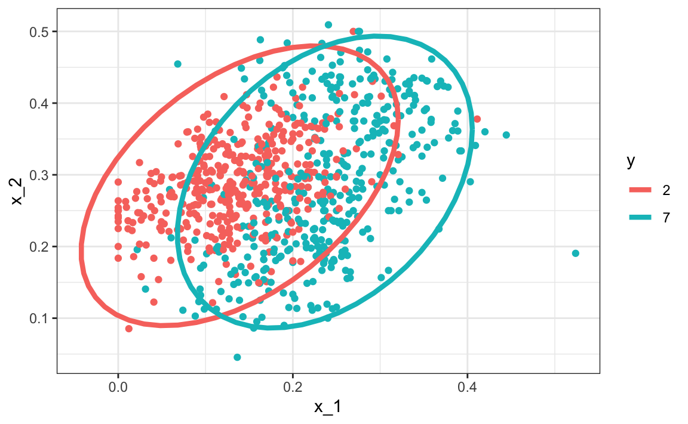
We can fit LDA using the MASS lda function:
Now the size of the ellipses as well as the angles are the same. This is because they are assumed to have the same standard deviations and correlations. Although this added constraint lowers the number of parameters, the rigidity lowers our accuracy to:
confusionMatrix(y_hat, mnist_27$test$y)$overall["Accuracy"]
#> Accuracy
#> 0.775When we force this assumption, we can show mathematically that the boundary is a line, just as with logistic regression. For this reason, we call the method linear discriminant analysis (LDA). Similarly, for QDA, we can show that the boundary must be a quadratic function.
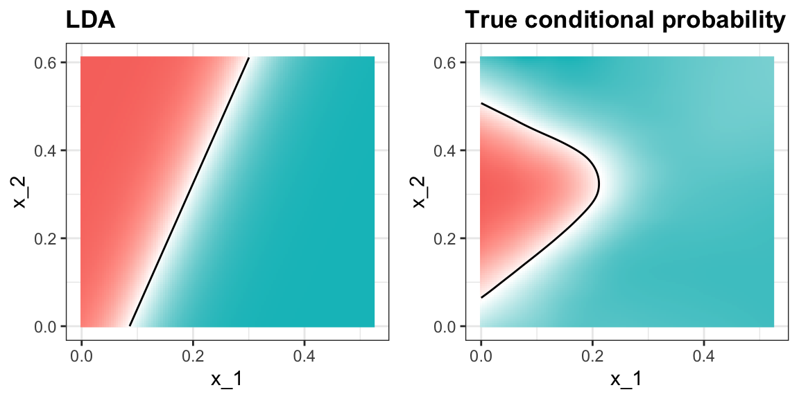
Although LDA often works well for simple datasets, in the case, the lack of flexibility does not permit us to capture the non-linearity in the true conditional probability function.
Extension to multiple classes
The ideas introduced above for the two-class case extend naturally to situations with more than two classes. For \(K\) classes, Bayes’ rule gives
\[ p_k(\mathbf{x}) = \Pr(Y = k \mid \mathbf{X} = \mathbf{x}) = \frac{f_{\mathbf{X}\mid Y=k}(\mathbf{x}),\Pr(Y=k)}{ \sum_{l=1}^K f_{\mathbf{X}\mid Y=l}(\mathbf{x})\Pr(Y=l) }, \qquad k = 1,\dots,K. \]
To construct a classifier, we simply estimate the quantities in this expression from the training data. For Naive Bayes, LDA, or QDA:
- we estimate the class-conditional densities \(f_{\mathbf{X}\mid Y=k}(\mathbf{x})\) using the assumed model (independence for Naive Bayes, a normal distribution with shared covariance for LDA, or a normal distribution with class-specific covariances for QDA), and
- we estimate the class proportions \(\Pr(Y = k)\) with the empirical prevalence \(\hat{\pi}_k = \frac{1}{n}\sum_{i=1}^n \mathbf{1}(y_i = k)\).
Once these components are estimated, we compute \(\hat{p}_k(\mathbf{x})\) for all \(k\), and assign \(\mathbf{x}\) to the class with the largest posterior probability.
This generalization requires no new ideas beyond the two-class case, the only difference is that we repeat the same estimation for all \(K\) classes.
Connection to distance
In LDA and QDA, we model each class as coming from a multivariate normal distribution estimated from the training data. When we classify a new observation \(\mathbf{x}\), the algorithm computes, for each class \(k\), we compute
\[ f_{\mathbf{X}\mid Y=k}(\mathbf{x}),\Pr(Y=k) \]
and predicts the class with the largest value.
So understanding how the normal density behaves helps explain why LDA and QDA behave like distance-based classifiers. For simplisity we consider the case in which classes are balanced: \(\Pr(Y=k) = 1/K\) for all \(k\):
Let’s first examine the one-dimensional normal density and
\[ f(x) = \frac{1}{\sqrt{2\pi}\sigma} \exp\left\{-\frac{1}{2}\left(\frac{x-\mu}{\sigma}\right)^2\right\}. \]
If we ignore the multiplicative constant \(1/(\sqrt{2\pi}\sigma)\) and take the logarithm, we get:
\[ \log f(x) \propto -\frac{1}{2}\left(\frac{x-\mu}{\sigma}\right)^2 \]
The key point is:
\[ \log f(x) \text{ decreases as } (x-\mu)^2 \text{ increases.} \]
In other words, the class with the highest density is simply the class whose mean is closest to (x) (after scaling by \(\sigma\), the within-class standard deviation).
For multivariate Gaussian classes, the same idea holds but with a more general notion of distance. The log density becomes:
\[ \log f(\mathbf{x}) \propto (\mathbf{x} - \boldsymbol{\mu})^\top\Sigma^{-1}(\mathbf{x} - \boldsymbol{\mu}), \]
which is negative of the Mahalanobis distance squared.
In LDA, all classes use the same covariance \(\Sigma\). So each class scores \(\mathbf{x}\) by its (scaled) squared distance to the class mean.
In QDA, each class has its own covariance, so each class uses a different distance metric.
Thus, LDA and QDA can both be viewed as distance-based classifiers: a new observation is assigned to the class whose Gaussian model places it closest in this Mahalanobis sense.
You are now ready to do exercises 14–17.
30.4 Classification and regression trees (CART)
Classification and regression trees (CART) provide a flexible, intuitive approach to prediction by repeatedly splitting the predictor space into smaller and more homogeneous regions. Instead of fitting a single global model, CART builds a tree-shaped set of decision rules that adapt to complex patterns in the data. In this section we motivate the idea and provide some details on how it is implemented.
The curse of dimensionality
We described how methods such as LDA and QDA are not meant to be used with many predictors \(p\) because the number of parameters that we need to estimate becomes too large. For example, with the digits example \(p = 784\), we would have over 600,000 parameters with LDA, and we would multiply that by the number of classes for QDA. Kernel methods, such as kNN or local regression, do not have model parameters to estimate. However, they also face a challenge when multiple predictors are used due to what is referred to as the curse of dimensionality. The dimension here refers to the fact that when we have \(p\) predictors, the distance between two observations is computed in \(p\)-dimensional space.
A useful way of understanding the curse of dimensionality is by considering how large we have to make a span/neighborhood/window to include a given percentage of the data. Remember that with larger neighborhoods, our methods lose flexibility, and to be flexible we need to keep the neighborhoods small.
To see how this becomes an issue for higher dimensions, suppose we have one continuous predictor with equally spaced points in the [0,1] interval and we want to create windows that include 1/10th of data. Then it’s easy to see that our windows have to be of size 0.1:
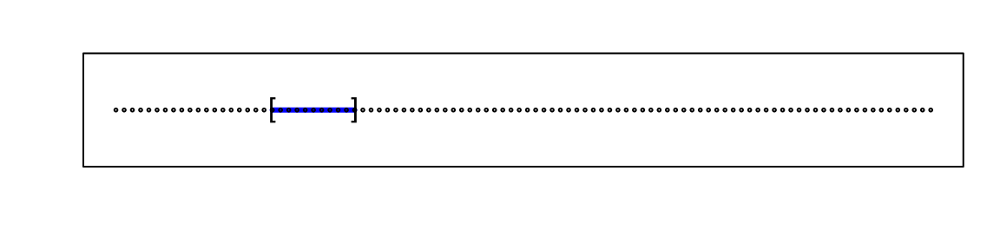
Now for two predictors, if we decide to keep the neighborhood just as small, 10% for each dimension, we include only 1 point. If we want to include 10% of the data, then we need to increase the size of each side of the square to \(\sqrt{.10} \approx .316\):

Using the same logic, if we want to include 10% of the data in a three-dimensional space, then the side of each cube is \(\sqrt[3]{.10} \approx 0.464\). In general, to include 10% of the data in a case with \(p\) dimensions, we need an interval with each side of size \(\sqrt[p]{.10}\) of the total. This proportion gets close to 1 quickly, and if the proportion is 1 it means we include all the data and are no longer smoothing.
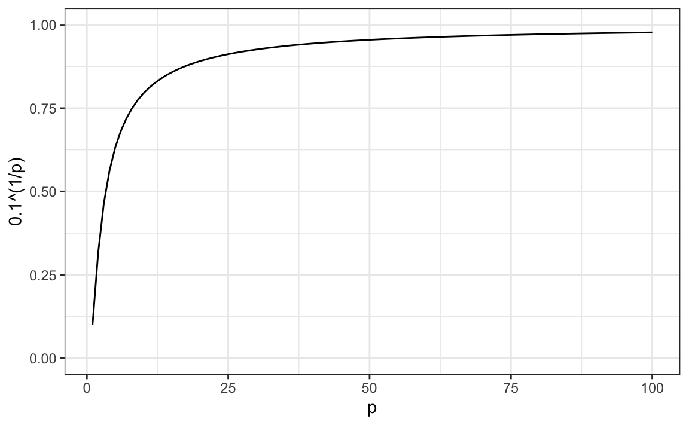
By the time we reach 100 predictors, the neighborhood is no longer very local, as each side covers almost the entire dataset.
Here we look at a set of elegant and versatile methods that adapt to higher dimensions and also allow these regions to take more complex shapes while still producing models that are interpretable. These are very popular, well-known and studied methods. We will concentrate on regression and decision trees and their extension to random forests.
CART motivation
To motivate this section, we will use a new dataset that includes the breakdown of the composition of olive oil into 8 fatty acids:
names(olive)
#> [1] "region" "area" "palmitic" "palmitoleic"
#> [5] "stearic" "oleic" "linoleic" "linolenic"
#> [9] "arachidic" "eicosenoic"For illustrative purposes, we will try to predict the region using the fatty acid composition values as predictors.
table(olive$region)
#>
#> Northern Italy Sardinia Southern Italy
#> 151 98 323We remove the area column because we won’t use it as a predictor.
olive <- select(olive, -area)Using kNN, we can achieve a test set accuracy of 0.97. However, a bit of data exploration reveals that we should be able to do even better. For example, if we look at the distribution of each predictor stratified by region we see that eicosenoic is only present in Southern Italy and that linoleic separates Northern Italy from Sardinia.
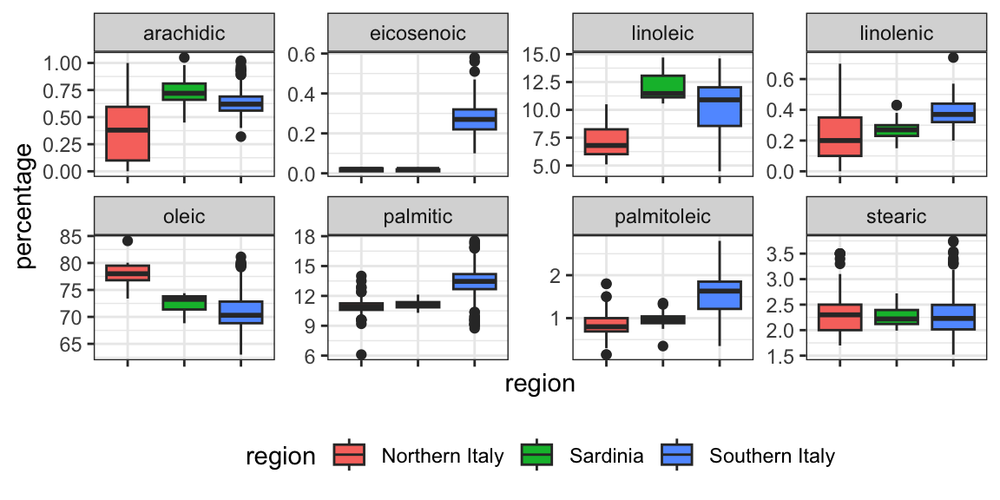
This implies that we should be able to build an algorithm that predicts perfectly! We can see this clearly by plotting the values for eicosenoic and linoleic.
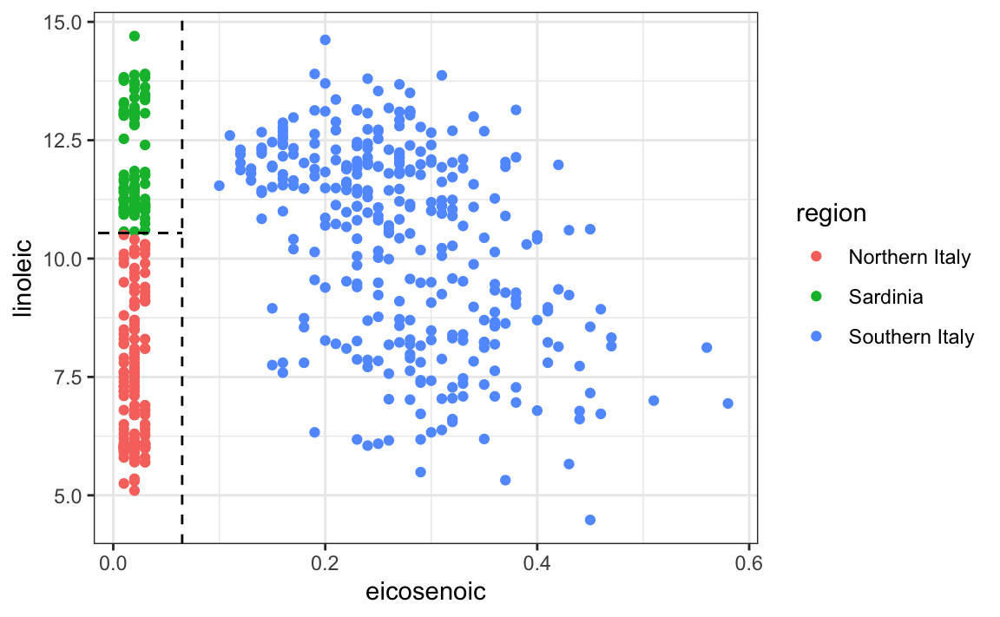
In Section 22.4, we defined predictor spaces, which in this case consists of eight-dimensional points with values between 0 and 100. In the plot above, we show the space defined by the two predictors eicosenoic and linoleic, and, by eye, we can construct a prediction rule that partitions the predictor space so that each partition contains only outcomes of a one category.
This in turn can be used to define an algorithm with perfect accuracy. Specifically, we define the following decision rule: if eicosenoic is larger than 0.065, predict Southern Italy. If not, then if linoleic is larger than \(10.535\), predict Sardinia, and if lower, predict Northern Italy. We can draw this decision tree as follows:

Decision trees like this are often used in practice. For example, to decide on a person’s risk of poor outcome after having a heart attack, doctors use the following:

(Source: Walton 2010 Informal Logic, Vol. 30, No. 2, pp. 159-1842.)
A tree is basically a flow chart of yes or no questions. The general idea of the methods we are describing is to define an algorithm that uses data to create these trees with predictions at the ends, referred to as nodes. Regression and decision trees operate by predicting an outcome variable \(y\) by partitioning the predictors.
Regression trees
When using trees, and the outcome is continuous, we call the approach a regression tree. To introduce regression trees, we will use the 2008 poll data used in @ec-smoothing to describe the basic idea of how we build these algorithms. As with other machine learning algorithms, we will try to estimate the conditional expectation \(f(x) = \mathrm{E}(Y | X = x)\) with \(Y\) the poll margin and \(x\) the day.
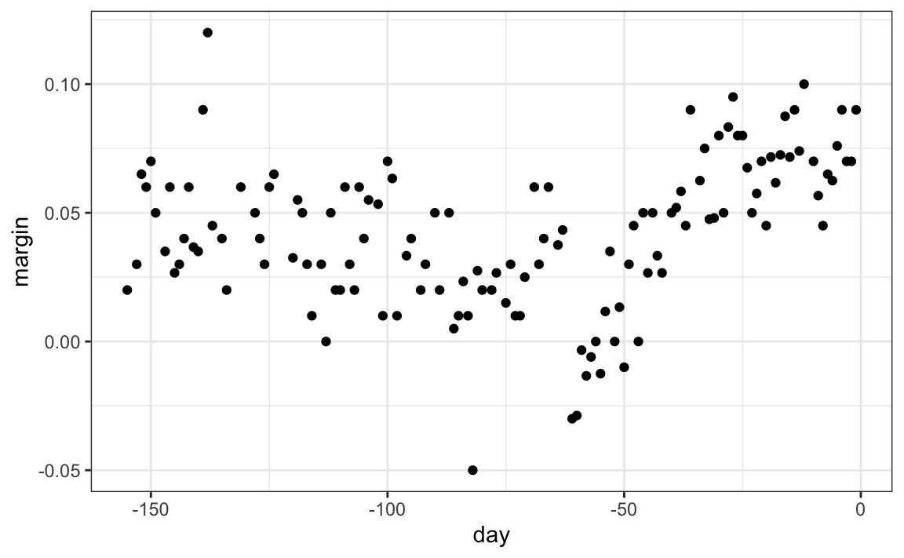
The general idea here is to build a decision tree and, at the end of each node, obtain a predictor \(\hat{y}\). A mathematical way to describe this is: we are partitioning the predictor space into \(J\) non-overlapping regions, \(R_1, R_2, \ldots, R_J\), and then for any predictor \(x\) that falls within region \(R_j\), estimate \(f(x)\) with the average of the training observations \(y_i\) for which the associated predictor \(x_i\) is also in \(R_j\).
But how do we decide on the partition \(R_1, R_2, \ldots, R_J\) and how do we choose \(J\)? Here is where the algorithm gets a bit complicated.
Regression trees create partitions recursively. We start the algorithm with one partition, the entire predictor space. In our simple first example, this space is the interval [-155, 1]. But after the first step, we will have two partitions. After the second step, we will split one of these partitions into two and will have three partitions, then four, and so on. Later we describe how we pick the partition, and when to stop.
For each existing partition, we find a predictor \(j\) and value \(s\) that define two new partitions, which we will call \(R_1(j,s)\) and \(R_2(j,s)\), that split our observations in the current partition by asking if \(x_j\) is bigger than \(s\):
\[ R_1(j,s) = \{\mathbf{x} \mid x_j < s\} \mbox{ and } R_2(j,s) = \{\mathbf{x} \mid x_j \geq s\} \]
In our current example, we only have one predictor, so we will always choose \(j = 1\), but in general this will not be the case. Now after we define the new partitions \(R_1\) and \(R_2\), and we decide to stop the partitioning, we compute predictors by taking the average of all the observations \(y\) for which the associated \(\mathbf{x}\) is in \(R_1\) or \(R_2\). We refer to these two as \(\hat{y}_{R_1}\) and \(\hat{y}_{R_2}\) respectively.
But how do we pick \(j\) and \(s\)? Basically we find the pair that minimizes the residual sum of squares (RSS):
\[ \sum_{i:\, x_i \in R_1(j,s)} (y_i - \hat{y}_{R_1})^2 + \sum_{i:\, x_i \in R_2(j,s)} (y_i - \hat{y}_{R_2})^2 \]
This is then applied recursively to the new regions \(R_1\) and \(R_2\). We describe how we stop later, but once we are done partitioning the predictor space into regions, in each region a prediction is made using the observations in that region.
Let’s take a look at what this algorithm does on the 2008 presidential election poll data. We will use the rpart function in the rpart package.
In this case, there is only one predictor. Thus we do not have to decide which predictor \(j\) to split by, we simply have to decide what value \(s\) we use to split. We can visually see where the splits were made:
The first split is made on day 39.5. One of those regions is then split at day 86.5. The two resulting new partitions are split on days 49.5 and 117.5, respectively, and so on. We end up with 8 partitions.
You can also see the partitions bu typing:
summary(fit)The final estimate \(\hat{f}(x)\) looks like this:
polls_2008 |>
mutate(y_hat = predict(fit)) |>
ggplot() +
geom_point(aes(day, margin)) +
geom_step(aes(day, y_hat), col = "red")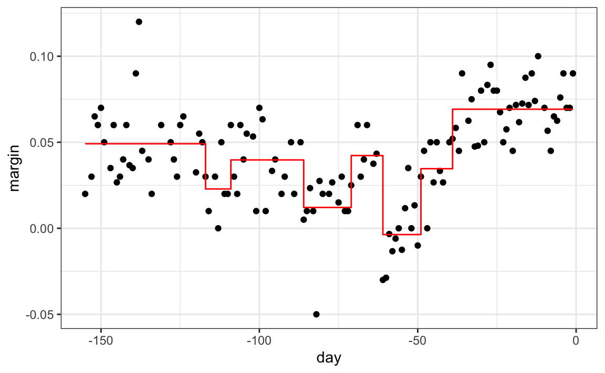
Note that the algorithm stopped partitioning at 8 nodes. This decision is based on a measure called the complexity parameter (cp). Every time the data is split into two new partitions, the training set RSS decreases because the model gains flexibility to adapt to the data. If splitting continued until every observation was isolated in its own partition, the RSS would eventually reach 0, since the average of a single value is the value itself. To prevent such overfitting, the algorithm requires that each new split reduce the RSS by at least a factor of cp. Larger values of cp therefore stop the algorithm earlier, leading to fewer nodes.
However, cp is not the only factor that controls partitioning. Another important parameter is the minimum number of observations required in a node before it can be split, set by the minsplit argument in rpart (default: 20). In addition, rpart allows users to specify the minimum number of observations allowed in a terminal node (leaf), controlled by the minbucket argument. By default, minbucket = round(minsplit / 3).
As expected, if we set cp = 0 and minsplit = 2, then our prediction is as flexible as possible and our predictor is our original data:
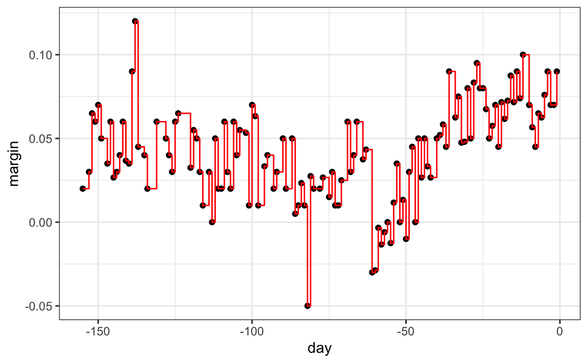
Intuitively we know that this is not a good approach as it will generally result in over-training. These cp, minsplit, and minbucket parameters can be used to control the variability of the final predictors. The larger these values are the more data is averaged to compute a predictor and thus reduce variability. The drawback is that it restricts flexibility.
So how do we pick these parameters? We can use cross validation, just like with any tuning parameter. Here is the resulting tree when we use cross validation to choose cp:
Note that if we already have a tree and want to apply a higher cp value, we can use the prune function. We call this pruning a tree because we are snipping off partitions that do not meet a cp criterion. Here is an example where we create a tree that used a cp = 0 and then we prune it back:
fit <- rpart(margin ~ ., data = polls_2008, control = rpart.control(cp = 0))
pruned_fit <- prune(fit, cp = 0.01)Classification (decision) trees
Classification trees, or decision trees, are used in prediction problems where the outcome is categorical. We use the same partitioning principle with some differences to account for the fact that we are now working with a categorical outcome.
The first difference is that we form predictions by calculating which class is the most common among the training set observations within the partition, rather than taking the average in each partition (as we can’t take the average of categories).
The second is that we can no longer use RSS to choose the partition. While we could use the naive approach of looking for partitions that minimize training error, better performing approaches use more sophisticated metrics. Two of the more popular ones are the Gini Index and Entropy.
In a perfect scenario, the outcomes in each of our partitions are all of the same category since this will permit perfect accuracy. The Gini Index is going to be 0 in this scenario, and become larger the more we deviate from this scenario. To define the Gini Index, we define \(\hat{p}_{j,k}\) as the proportion of observations in partition \(j\) that are of class \(k\). The Gini Index is defined as:
\[ \mbox{Gini}(j) = \sum_{k = 1}^K \hat{p}_{j,k}(1-\hat{p}_{j,k}) \]
If you study the formula carefully, you will see that it is in fact 0 in the perfect scenario described above.
Entropy is a related quantity, defined as:
\[ \mbox{entropy}(j) = -\sum_{k = 1}^K \hat{p}_{j,k}\log(\hat{p}_{j,k}), \mbox{ with } 0 \times \log(0) \mbox{ defined as }0 \]
If we use a classification tree on the 2 or 7 example, we achieve an accuracy of 0.81 which is better than regression, but is not as good as what we achieved with kernel methods.
The plot of the estimated conditional probability shows us the limitations of classification trees:
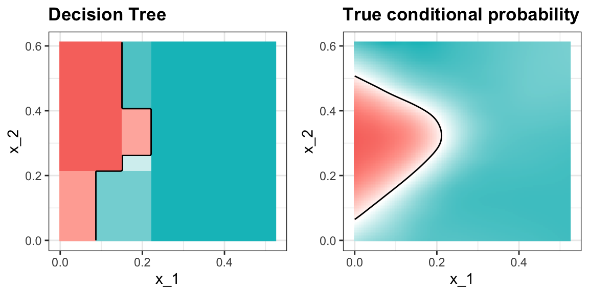
Note that with decision trees, it is difficult to make the boundaries smooth since each partition creates a discontinuity.
Classification trees have certain advantages that make them very useful. They are highly interpretable, even more so than linear models. They are also easy to visualize (if small enough). Finally, they can model human decision processes and don’t require use of dummy predictors for categorical variables. On the other hand, the approach via recursive partitioning can easily over-train and is therefore a bit harder to train than, for example, linear regression or kNN. Furthermore, in terms of accuracy, it is rarely the best performing method since it is not very flexible and is highly unstable to changes in training data. Random forests, explained next, improve on several of these shortcomings.
30.5 Random forests
Random forests are a very popular machine learning approach that addresses the shortcomings of decision trees using a clever idea. The goal is to improve prediction performance and reduce instability by averaging multiple decision trees: a forest of trees constructed with randomness. It has two features that help accomplish this.
The first step is bootstrap aggregation or bagging. The general idea is to generate many predictors, each using regression or classification trees, and then forming a final prediction based on the average prediction of all these trees. To assure that the individual trees are not the same, we use the bootstrap to induce randomness. These two features combined explain the name: the bootstrap makes the individual trees randomly different, and the combination of trees is the forest. The specific steps are as follows.
1. Build \(B\) decision trees using the training set. We refer to the fitted models as \(T_1, T_2, \dots, T_B\).
2. For every observation in the test set, form a prediction \(\hat{y}_j\) using tree \(T_j\).
3. For continuous outcomes, form a final prediction with the average \(\hat{y} = \frac{1}{B} \sum_{j = 1}^B \hat{y}_j\). For categorical data classification, predict \(\hat{y}\) with majority vote (most frequent class among \(\hat{y}_1, \dots, \hat{y}_B\)).
So how do we get different decision trees from a single training set? For this, we use randomness in two ways which we explain in the steps below. Let \(N\) be the number of observations in the training set. To create \(T_j, \, j = 1,\ldots,B\) from the training set we do the following:
1. Create a bootstrap training set by sampling \(N\) observations from the training set with replacement. This is the first way to induce randomness.
2. A large number of features is typical in machine learning challenges. Often, many features can be informative but including them all in the model may result in overfitting. The second way random forests induce randomness is by randomly selecting features to be included in the building of each tree. A different random subset is selected for each tree. This reduces correlation between trees in the forest, thereby improving prediction accuracy.
To illustrate how the first steps can result in smoother estimates, we will fit a random forest to the 2008 polls data. We will use the randomForest function in the randomForest package:
library(randomForest)
fit <- randomForest(margin ~ ., data = polls_2008) Note that if we apply the function plot to the resulting object, we see how the error rate of our algorithm changes as we add trees:
plot(fit)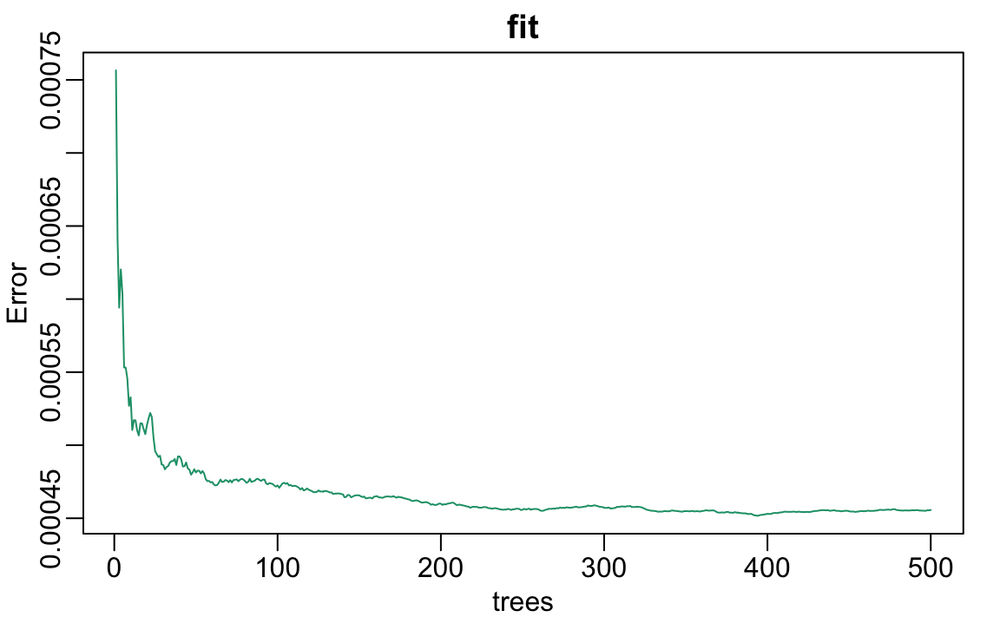
In this case, the accuracy improves as we add more trees until we have used about 300 trees after which accuracy stabilizes.
The resulting estimate for this random forest, obtained with
y_hat <- predict(fit, newdata = polls_2008)is shown with the red curve below:
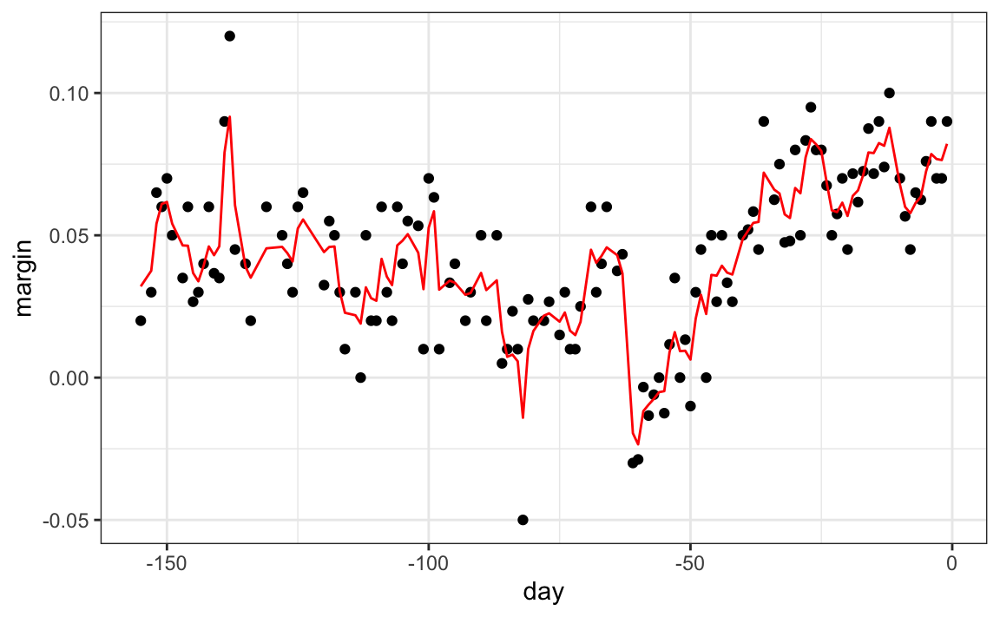
Notice that the random forest estimate is much smoother than what we achieved with the regression tree in the previous section. This is possible because the average of many step functions can be smooth. We can see this by visually examining how the estimate changes as we add more trees. In the following figure, you see each of the bootstrap samples for several values of \(b\) and for each one we see the tree that is fitted in grey, the previous trees that were fitted in lighter grey, and the result of averaging all the trees estimated up to that point.

library(randomForest)
train_rf <- randomForest(y ~ ., data = mnist_27$train)The accuracy for the random forest fit for our 2 or 7 example is 0.825. Here is what the conditional probabilities look like:
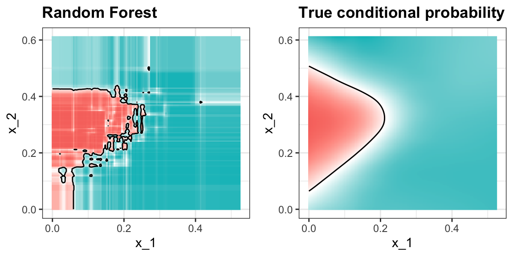
Visualizing the estimate shows that, although we obtain high accuracy, it appears that there is room for improvement by making the estimate smoother. This could be achieved by changing the parameter that controls the minimum number of data points in the nodes of the tree. The larger this minimum, the smoother the final estimate will be. If we use a node size of 65, the number of neighbors we used with kNN, we get an accuracy of 0.815. The selected model improves accuracy and provides a smoother estimate:
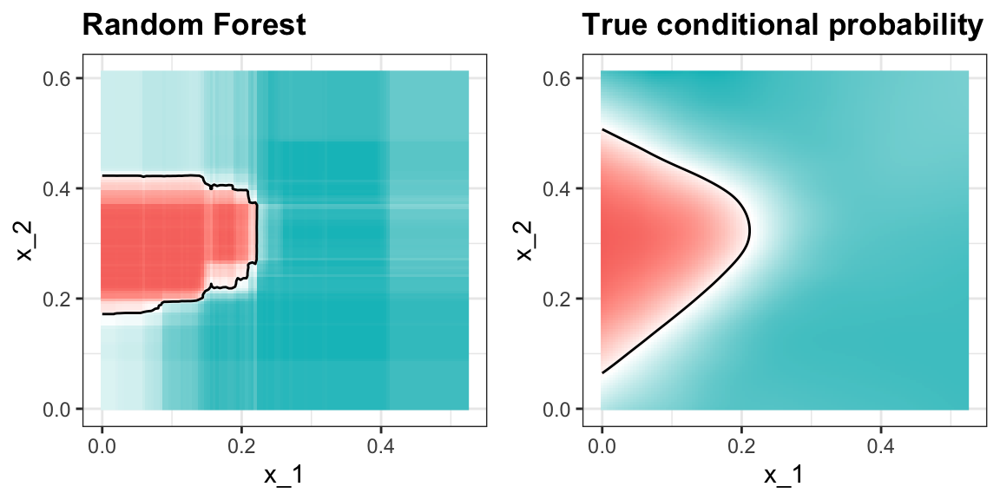
Variable importance
Random forest performs better than trees in all the examples we have considered. However, a disadvantage of random forests is that we lose interpretability. An approach that helps with interpretability is to examine variable importance. To define variable importance, we count how often a predictor is used in the individual trees. You can learn more about variable importance in an advanced machine learning book3. The randomForest package includes the function importance to extracts variable importance from a fitted random forest model. The caret package includes the function varImp that extracts variable importance from any model in which the calculation is implemented. We give an example on how we use variable importance in the next section.
30.6 Exercises
1. Create a dataset using the following code:
Use the caret package to partition into a test and training set of equal size. Train a linear model and report the RMSE. Repeat this exercise 100 times and make a histogram of the RMSEs and report the average and standard deviation. Hint: adapt the code shown earlier like this:
and put it inside a call to replicate.
2. Now we will repeat the above but using larger datasets. Repeat exercise 1 but for datasets with n <- c(100, 500, 1000, 5000, 10000). Save the average and standard deviation of RMSE from the 100 repetitions. Hint: use the sapply or map functions.
3. Describe what you observe with the RMSE as the size of the dataset becomes larger.
- On average, the RMSE does not change much as
ngets larger, while the variability of RMSE does decrease. - Because of the law of large numbers, the RMSE decreases: more data, more precise estimates.
-
n = 10000is not sufficiently large. To see a decrease in RMSE, we need to make it larger. - The RMSE is not a random variable.
4. Now repeat exercise 1, but this time make the correlation between x and y larger by changing Sigma like this:
Repeat the exercise and note what happens to the RMSE now.
5. Which of the following best explains why the RMSE in exercise 4 is so much lower than exercise 1:
- It is just luck. If we do it again, it will be larger.
- The Central Limit Theorem tells us the RMSE is normal.
- When we increase the correlation between
xandy,xhas more predictive power and thus provides a better estimate ofy. This correlation has a much bigger effect on RMSE thann. Largensimply provide us more precise estimates of the linear model coefficients. - These are both examples of regression, so the RMSE has to be the same.
6. Create a dataset using the following code:
Note that y is correlated with both x_1 and x_2, but the two predictors are independent of each other.
cor(dat)Use the caret package to partition into a test and training set of equal size. Compare the RMSE when using just x_1, just x_2, and both x_1 and x_2. Train a linear model and report the RMSE.
7. Repeat exercise 6 but now create an example in which x_1 and x_2 are highly correlated:
Use the caret package to partition into a test and training set of equal size. Compare the RMSE when using just x_1, just x_2, and both x_1 and x_2 Train a linear model and report the RMSE.
8. Compare the results in 6 and 7 and choose the statement you agree with:
- Adding extra predictors can improve RMSE substantially, but not when they are highly correlated with another predictor.
- Adding extra predictors improves predictions equally in both exercises.
- Adding extra predictors results in over fitting.
- Unless we include all predictors, we have no predicting power.
9. Define the following dataset:
make_data <- function(n = 1000, p = 0.5,
mu_0 = 0, mu_1 = 2,
sigma_0 = 1, sigma_1 = 1){
y <- rbinom(n, 1, p)
f_0 <- rnorm(n, mu_0, sigma_0)
f_1 <- rnorm(n, mu_1, sigma_1)
x <- ifelse(y == 1, f_1, f_0)
test_index <- createDataPartition(y, times = 1, p = 0.5, list = FALSE)
list(train = data.frame(x = x, y = as.factor(y)) |>
slice(-test_index),
test = data.frame(x = x, y = as.factor(y)) |>
slice(test_index))
}Note that we have defined a variable x that is predictive of a binary outcome y.
dat$train |> ggplot(aes(x, color = y)) + geom_density()Fit a linear regression model by treating (Y) as a continuous outcome, then classify observations by predicting class 1 whenever the fitted value exceeds 0.5. Next, fit a logistic regression model to the same data and compare the classification accuracy of these two approaches.
10. Repeat the simulation from exercise 9 100 times and compare the average accuracy for each method and notice they give practically the same answer.
11. Generate 25 different datasets changing the difference between the two class: delta <- seq(0, 3, len = 25). Plot accuracy versus delta.
12. The dslabs package contains an example dataset similar to mnist_27 but that also includes 1. You can load it and explore it like this:
library(dslabs)
mnist_127$train |> ggplot(aes(x_1, x_2, color = y)) + geom_point()Fit QDA using the qda function in the MASS package then create a confusion matrix for predictions on the test. Which of the following best describes the confusion matrix:
- It is a two-by-two table.
- Because we have three classes, it is a two-by-three table.
- Because we have three classes, it is a three-by-three table.
- Confusion matrices only make sense when the outcomes are binary.
13. The byClass component returned by the confusionMatrix object provides sensitivity and specificity for each class. Because these terms only make sense when data is binary, each row represents sensitivity and specificity when a particular class is 1 (positives) and the other two are considered 0s (negatives). Based on the values returned by confusionMatrix, which of the following is the most common mistake:
- Calling 1s either a 2 or 7.
- Calling 2s either a 1 or 7.
- Calling 7s either a 1 or 2.
- All mistakes are equally common.
14. To visualize the QDA decision boundary, start by creating a dense grid of points covering the \((x_1, x_2)\) space:
Use your fitted QDA model to compute predicted probabilities on this grid by using predict(qda_fit, newdata = new_x). This will give you \(\hat{p}(x_1, x_2)\) for each point in the grid.
Finally, plot the grid and color each point depending on whether \(\hat{p}(x_1, x_2) > 0.5\) (predict class 1) or \(\hat{p}(x_1, x_2) \le 0.5\) (predict class 0). The resulting picture shows the decision region determined by QDA.
15. Repeat exercise 14 but for LDA. Which of the following explains why LDA has worse accuracy:
- LDA separates the space with lines making it too rigid.
- LDA divides the space into two and there are three classes.
- LDA is very similar to QDA the difference is due to chance.
- LDA can’t be used with more than one class.
16. Now repeat exercise 12 for kNN with \(k=31\) and compute and compare the overall accuracy for all three methods.
17. To understand how a simple method like kNN can outperform a model that explicitly tries to emulate Bayes’ rule, explore the conditional distributions of x_1 and x_2 to see if the normal approximation holds. Generative models can be very powerful, but only when we are able to successfully approximate the joint distribution of predictors conditioned on each class.
18. Earlier we used logistic regression to predict sex from height. Use kNN to do the same. Use the code described in this chapter to select the \(F_1\) measure and plot it against \(k\). Compare to the \(F_1\) of about 0.6 we obtained with regression.
19. Create a simple dataset where the outcome grows 0.75 units on average for every increase in a predictor:
n <- 1000
sigma <- 0.25
x <- rnorm(n, 0, 1)
y <- 0.75 * x + rnorm(n, 0, sigma)
dat <- data.frame(x = x, y = y)Use rpart to fit a regression tree and save the result to fit.
20. Plot the final tree so that you can see where the partitions occurred.
21. Make a scatterplot of y versus x along with the predicted values based on the fit.
22. Now train a random forest instead of a regression tree using randomForest from the randomForest package, and remake the scatterplot with the prediction line.
23. Use the function plot to see if the random forest has converged or if we need more trees.
24. It seems that the default values for the random forest result in an estimate that is too flexible (not smooth). Re-run the random forest but this time with nodesize set at 50 and maxnodes set at 25. Remake the plot.
25. This dslabs dataset includes the tissue_gene_expression with a matrix x:
with the gene expression measured on 500 genes for 189 biological samples representing seven different tissues. The tissue type is stored in tissue_gene_expression$y.
table(tissue_gene_expression$y)Fit a random forest using the randomForest function in the package randomForest. Then use the varImp function to see which are the top 10 most predictive genes. Make a histogram of the reported importance to get an idea of the distribution of the importance values.